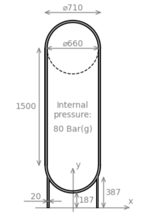

FEAPACK Examples
Basic example #3: Analysis of a pressure vessel.
The following figure represents the cross-section of an axisymmetric pressure vessel:
The cylindrical pressure vessel has two hemispherical ends, one of which is supported by a skirt. Dimensions are shown in mm. The material (steel) is considered elastic, homogeneous, and isotropic, defined by a Young's modulus of 210 GPa, a Poisson's ration of 0.3, and a density of 7.85 g/cm³. The internal pressure has a magnitude of 80 Bar(g). The objective is to perform a static analysis in order to determine if the pressure vessel can handle the internal pressure. The self-weight of the vessel should be considered in the analysis. An axisymmetric stress state is assumed.
Consistent units: below, the geometry will be defined in mm, whereas the Young's modulus and internal pressure are defined in MPa. Additionally, the acceleration due to gravity is specified in mm/s² and the density is specified in t/mm³. Consequently, results are computed in N (forces), mm (displacements), mm/mm (strains), and MPa (stresses).
The FEAPACK files for this example can be found here.
Solution via FEAPACK:
Start by creating a job script named basic3.py and import the modules shown below. In this example, we will run the solver in parallel mode. For multiprocessing, the main guard is required:
import feapack.model
import feapack.solver
# main guard required for multiprocessing
if __name__ == '__main__':
For this example, a finite element mesh has been prepared in basic3.inp:
The basic3.inp defines 51,007 nodes and 24,320 CAX6 elements. The supported Abaqus element types are automatically converted into the comparable FEAPACK element types (in this case, the CAX6 elements are converted into Plane6 elements). Additionally, Abaqus stores the element connectivity using 1-based indexing, which is automatically converted into 0-based indexing, as required by FEAPACK.
The mesh input file also defines the following sets:
'INTERNAL-SURFACE-NODES'containing the nodes coinciding with the internal surface of the pressure vessel.'BASE-NODES'containing the nodes coinciding with the bottom surface of the skirt, contacting the ground.'ALL-ELEMENTS'containing all the elements of the finite element mesh.
Due to a technical limitation, the name of any set defined within an Abaqus input file is always automatically converted to upper case. Moreover, 1-based indexing is automatically converted into 0-based indexing, as required by FEAPACK.
Inside the main guard of the job script, the following code loads the mesh shown above into a new model database (MDB) and prints the names of the available node and element sets:
Next, the surface set shown below is created. Surface sets cannot be defined in a mesh input file, as they are based on a custom implementation:
# however, surface sets in FEAPACK have their own format, so they have to be created here
mdb.surfaceSet(name='INTERNAL-SURFACE', surfaceNodes='INTERNAL-SURFACE-NODES')
The material and section are defined as follows:
# create material and section
mdb.material(name='STEEL', young=210000.0, poisson=0.3, density=7.85e-9) # density required for gravity load
mdb.section(
name='STEEL-SECTION',
region='ALL-ELEMENTS',
material='STEEL',
type=feapack.model.SectionTypes.Axisymmetric, # or simply 'Axisymmetric'
reducedIntegration=False
)
We then define the following loads and boundary condition:
# create loads
mdb.acceleration(name='GRAVITY', region='ALL-ELEMENTS', y=-9806.65)
mdb.pressure(name='INTERNAL-PRESSURE', region='INTERNAL-SURFACE', magnitude=8.0)
# create boundary condition
mdb.boundaryCondition(name='FIXED-BASE', region='BASE-NODES', u=0.0, v=0.0)
Finally, we call the solver, still within the main guard:
# call solver inside main guard for multiprocessing
# specifying processes > 1 will enable parallel mode
feapack.solver.solve(mdb, analysis='static', processes=4)
To actually perform the finite element analysis, the following command is used: python basic3.py. The file basic3.out will be generated upon a successful run. Then, the viewer application can be launched using the following command: python -m feapack.viewer.
Animated results generated using the viewer application:
As a form of validation, here are the results from FEAPACK vs. Abaqus using the comparable CAX6 element:
FEAPACK
Abaqus